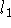

A Remark on Bartels and Conn's Linearly Constrained Discrete

Problems
\
Roger W. Koenker
Department of Economics
University of Illinois at Urbana-Champaign
and
Pin T. Ng
Department of Economics
University of Houston
\
Categories and Subject Descriptors: G.1.6 [Numerical Analysis]:
Optimization - constrained optimization, gradient methods, linear
programming; G.3 [Mathematics of Computing]: Probability and Statistics -
statistical computing
General Terms: Algorithms, Performance, Reliability, Theory
Key Words and Phrases: degeneracy,  norm, discrete approximation,
linearly constrained approximation
norm, discrete approximation,
linearly constrained approximation
Abstract
Two modifications of Bartels and Conn's algorithm for solving linearly
constrained discrete  problems are described. The modifications
are designed to improve performance of the algorithm under conditions
of degeneracy.
problems are described. The modifications
are designed to improve performance of the algorithm under conditions
of degeneracy.